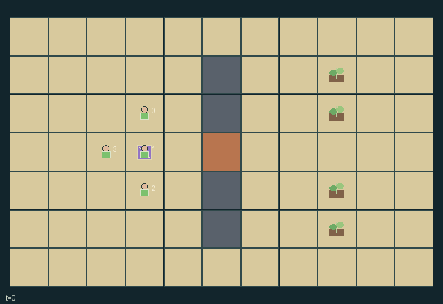

GI176 · Charter Frontier

Claim one privately useful frontier plot, construct with finite materials and collect harvests; voluntarily finance and vote on temporary shared corridor access.
Identity and original contract
4 independently actionable roles; 13 discrete commands per role; 140 native observation columns per role; original horizon 96 steps. Declared per-step reward range: -1.0 to 5.0. Observation regime: partially_observable.
Source SHA-256: f092787e54b527cb26a53ecbef4b71df7cdfa7312ad9197b165294c82d94f760
The objective, rewards, population, map and horizon remain original. A preview is not a success claim.
Objective and gameplay
Claim one privately useful frontier plot, construct with finite materials and collect harvests; voluntarily finance and vote on temporary shared corridor access.
Two contributed materials fund a four-tick ballot. Three yes votes at its deadline cause a two-transition delay and then twelve ticks of gate entry rights. A single pivotal vote can therefore change a peer movement mask after a delay; expiry closes entry again.
- Move on public floor; walls block movement. The middle corridor gate allows entry only during an active charter; upper and lower detours remain open.
- Claim at most one plot from distance at most one; ties resolve by lower actor index, then lower plot index. Build there for two materials.
- Buildings mature automatically to three. An adjacent owner can collect a mature harvest; each plot needs two collections for joint completion.
- Donate one material voluntarily at the council. The public fund holds at most four; donations are not refunded. No agent is forced to donate.
- At the council, propose when at least two fund units exist and no ballot, delay or lease is active. Lowest-index proposer wins and starts with yes.
- Four subsequent ballot ticks permit remote public yes, no or abstain changes. Only at deadline do at least three yes votes spend two fund units.
- A passed charter waits two further transitions, then opens gate entry for twelve ticks. Expiry blocks new entry; an occupant may leave. No automatic eviction.
- No single veto rule exists: a no vote is not yes, and two non-yes votes defeat quorum. Failed ballots expire without spending fund.
Ending: All four plots have two collected harvests. H=96 otherwise truncates. No vote outcome is treated as task success.
What this game explores
Information, sensing & communication: Who knows a fact, when it was measured, and whether it was communicated are separate state variables. Test memory or communication using only the same role-visible evidence.
Commitment, exchange & governance: Promises consume time, liquidity, access or material. Separate an announced agreement from a binding commitment and from its eventual delivery; log cancellation and expiry too.
Joint transport & shared access: Positions, load geometry, occupancy and persistent access constrain whose action can succeed next. Distinguish physical handoff, shared controls and simultaneous force from a cosmetic cooperation label.
These are questions supported by rule structure, not observed learning effects.
Play it: operating walkthrough
crucibles play --game gi176Keep Python running and open its printed address. Select this game, set a seed and press Create session. The game itself is always English.
Assign a role range to Host with Assign / take over, or Assign all roles. Invite a second participant with Create player invitation, then assign a disjoint subset. Every original role is available.
For every owned role choose a legal command and press Queue. Arrow keys / WASD queue a declared directional action for the current role camera when available. Space or Advance one joint step advances everyone together. Non-directional games use the selectors.
Unqueued roles use the labelled untrained uniform-legal policy. Take over or release roles before the next step without resetting. Full-state debug is privileged and permanently logged; role cameras preserve permissions. Close the session to retain logs. Server restart does not restore sessions.
Complete command reference
IDs and English labels exactly match the manifest. Availability depends on role, resources, location and phase. An available action can still have no productive effect.
0·wait
1·north
2·east
3·south
4·west
5·claim nearby plot
6·build owned plot
7·harvest owned mature plot
8·donate one material
9·propose corridor charter
10·vote yes
11·vote no
12·abstain
Roles and capability identifiers
These original role names describe capabilities, not interchangeable skins. Check each owned role's legal selector before planning handoffs.
agent_0·settler 0
agent_1·settler 1
agent_2·settler 2
agent_3·settler 3
Information and observation permissions
Topology, positions, materials, claims, buildings, vote history, deadline, fund and gate timers are public. Only the observer own four-plot valuation vector is included; peer valuations and renderer attributes exclude them.
The GIF is full-state debug and may reveal hidden entities or private state. Train on obs[agent], not the picture, state tree or another role's private row. Field slices and visibility are in the original manifest.
Reinforcement-learning integration
import jax
from crucibles_jaxmarl import make
env = make("gi176")
key = jax.random.PRNGKey(0)
key, rk, ak, sk = jax.random.split(key, 4)
obs, state = jax.jit(env.reset)(rk)
actions = env.sample_actions(ak, state)
obs, state, rewards, dones, info = jax.jit(env.step_env)(sk, state, actions)
done = dones["__all__"]Observations are float32 vectors of width 140; actions are scalar int32; masks have 13 entries. Supply all 4 roles each transition. Masked sampling is an engineering reference, not a trained learner.
step_env retains terminal data without reset. step performs outer autoreset and keeps terminal data in info["raw_state"] and info["raw_observation"]. Use dones["__all__"] for episode boundaries; separate completion, failure and time limit in analysis.
JIT or vmap equal identities and shapes. Split independent reset, policy and transition keys. Group different shapes explicitly; do not shrink the population or horizon. Host rendering stays outside training.
Training questions and fair evaluation
Define valid completion from the objective before fitting. Preserve original rewards and also report real deliveries/services, losses, resource state, unresolved episodes and per-role returns. Animation is not a reward signal.
Who knows a fact, when it was measured, and whether it was communicated are separate state variables. Test memory or communication using only the same role-visible evidence.
Promises consume time, liquidity, access or material. Separate an announced agreement from a binding commitment and from its eventual delivery; log cancellation and expiry too.
Positions, load geometry, occupancy and persistent access constrain whose action can succeed next. Distinguish physical handoff, shared controls and simultaneous force from a cosmetic cooperation label.
Compare memory, communication or centralized critics under matched actor information. Declare critic access; keep actor inputs role-filtered. Match partner/opponent distributions, masks, compute and checkpoint selection. Final tests never enter fitting or selection.
Independent training runs or source-pairing blocks are inferential units; episodes from one policy are not independent training replications. Save hashes, keys, versions, device, time and cost. Negative, zero, failed and indeterminate outcomes are valid. No trained checkpoint or target score is supplied.
Classification and evidence
Overlapping editorial labels are reading aids, not proof of novelty, difficulty, strategic equivalence or learning effects.
- Information, sensing & communication
- Evidence
manifest.task.objective: Claim one privately useful frontier plot, construct with finite materials and collect harvests; voluntarily finance and vote on temporary shared corridor access.
- Commitment, exchange & governance
- Evidence
manifest.task.objective: Claim one privately useful frontier plot, construct with finite materials and collect harvests; voluntarily finance and vote on temporary shared corridor access.
- Evidence
manifest.actions.9: propose corridor charter
- Evidence
manifest.actions.10: vote yes
- Joint transport & shared access
- Evidence
scene.rules.0: Move on public floor; walls block movement. The middle corridor gate allows entry only during an active charter; upper and lower detours remain open.
- Evidence
scene.rules.6: A passed charter waits two further transitions, then opens gate entry for twelve ticks. Expiry blocks new entry; an occupant may leave. No automatic eviction.
Source, receipts and preview limits
The world-only English GIF replays saved untrained legal actions through the original kernel. At most 25 actual endpoints include initial and terminal state; no invented interpolation. It is full-state debug, not the role observation.
Original source, observation slices, manifest and mechanism
Native receipt · Presentation receipt
Engineering passes do not establish learning. Nonzero floating differences remain recorded and undetermined; no new tolerance was introduced. Human scores remain unverified.